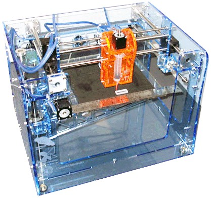

Fab it Yourself
3D printers and other types of rapid prototyping machines are the latest innovation in manufacturing where components are built by depositing material (usually plastic) layer by layer. Until recently the cheapest machines were still expensive (in the $10,000s range). Not anymore – now there are freely available plans for fabricators (fabs or fabbers as they are known) that are well within the price range and capabilities (assembly required) of hobbyists.
 Objects Produced by the CandyFab 4000License: CC BY 2.0, Windell Oskay
Objects Produced by the CandyFab 4000License: CC BY 2.0, Windell Oskay
Background
Most rapid prototyping machines convert a 3D digital model, often in the form of an STL (.stl) file, into a physical prototype by repeatedly 'printing' layers of material, until magically the final object is complete. The object can incorporate complex features, such as voids, which are impossible to manufacture in a single object with traditional manufacturing techniques such as milling.
Hobbyists have cast envious eyes on rapid prototyping machines, but alas the fabs have remained stubbornly expensive and beyond their means. You may recognize parallels here with the origin of the Personal Computer (PC) industry, where hobbyists were locked out of mainframe computers and so took matters into their own hands, and we all known were that has taken us – way beyond mainframes, thankfully. Well here we go again; hobbyists have once again struck out on their own, armed with ingenuity and minimal funds.
CandyFab 4000
Imagine designs so good you can literally taste them – that was the goal for the team behind the CandyFab 4000. They chose to use granulated sugar as the printing medium for their fab. With a few core components such as a $10 air heater, a $5 aquarium air pump and the motors from a couple of old HP plotters they are able to produce large, low-resolution models in fused (melted) sugar.
The plans for the CandyFab 4000 are freely available, so any hobbyists with a sweet tooth can try making first the fab and then sugar-encrusted objects. The software that drives the CandyFab 400 is also freely available and uses a POV-Ray file as a starting point. The POV-Ray file format is exported by our Caedium Viz Export add-on, so imagine seeing your simulation results realized in sugar.
Fab@Home
The Fab@Home team, from Cornell, has designed and tested a low cost ($2300 for the components or $3000-$3600 for a kit) fabber that uses a syringe to deposit material layer by layer into a final object. As with the CandyFab 4000, the Fab@Home uses low-cost components. However, the Fab@Home can also use a variety of materials within the syringe delivery system, from silicone to chocolate. The only requirement of the material is that it has enough structural integrity to stick and stack upon itself and ultimately harden or set.
Fab@Home FabberCourtesy of Fab@Home
Freely available software uses STL files to drive the Fab@Home. Our Caedium Exchange add-on exports the STL file format along with other standard CAD exchange formats.
The Future
The fabs discussed here are similar to the first PCs – appealing to practical hobbyists who don't mind getting their hands dirty. However, they are paving the way for ever more affordable and capable machines for the rest of us.
At some point the tools to design, analyze and manufacture devices within the confines of our homes will be affordable and practical – then we will start to see real innovation. I, for one, can't wait.
Feedback
Questions? Ideas? Problems?

Recent blog posts
- CFD Simulates Distant Past
- Background on the Caedium v6.0 Release
- Long-Necked Dinosaurs Succumb To CFD
- CFD Provides Insight Into Mystery Fossils
- Wind Turbine Design According to Insects
- Runners Discover Drafting
- Wind Tunnel and CFD Reveal Best Cycling Tuck
- Active Aerodynamics on the Lamborghini Huracán Performante
- Fluidic Logic
- Stonehenge Vortex Revealed as April Fools' Day Distortion Field
 Get our Blog feed
Get our Blog feed